Enzo Ferrante
Robust machine learning · ML fairness & bias · Computer vision · Natural language processing · Medical imaging · Applications in healthcare and biology
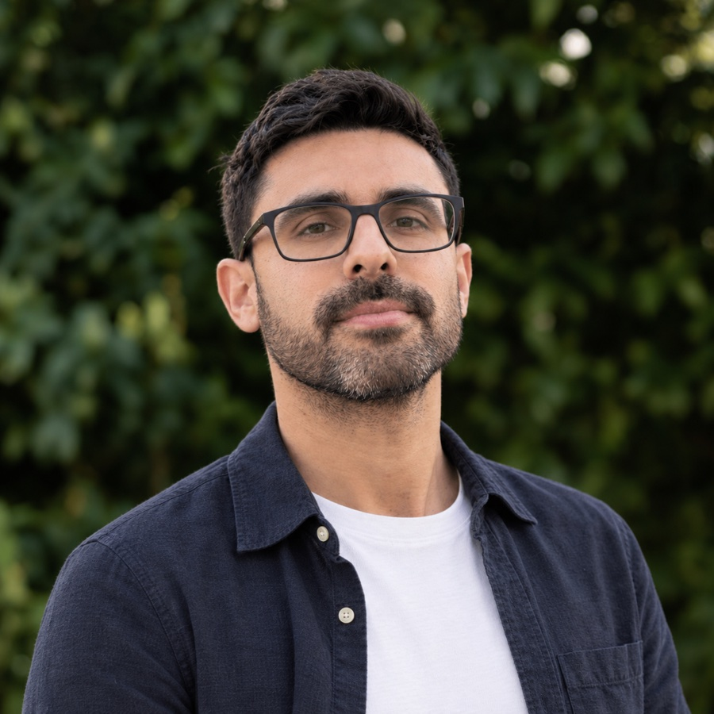
News
Talks, papers and other updates. Scroll for older news.
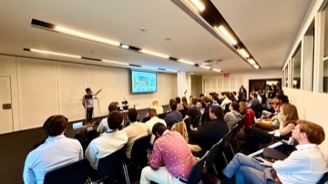
Keynote at the ShapeMI Workshop @ MICCAI 2026 (Strasbourg): “Learning Anatomically Plausible Shapes for Medical Image Segmentation with Hybrid Graph Neural Networks”. I also co-organized the 4th FAIMI workshop on fairness in medical imaging. Read more →
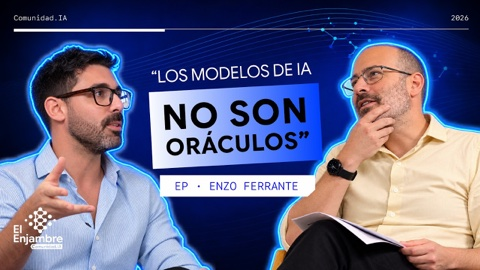
Interview at El Enjambre IA about our work on algorithmic fairness (in Spanish). Watch on YouTube →
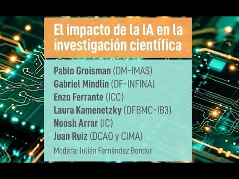
I took part in the panel “El impacto de la IA en la investigación científica” organized by Exactas UBA, with researchers from the faculty (in Spanish). Watch on YouTube →
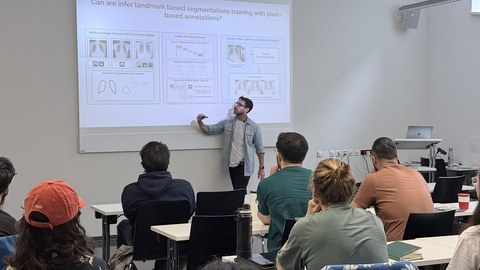
CAIM Talk at the Medical University of Vienna: “Towards robust anatomical segmentation of medical images”. Read more →
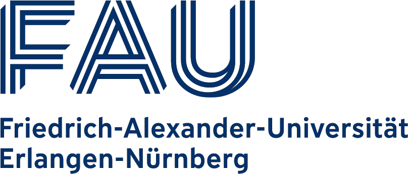
Guest talk at the Pattern Recognition Lab, FAU Erlangen-Nürnberg: “Towards robust anatomical segmentation of medical images”. Read more →
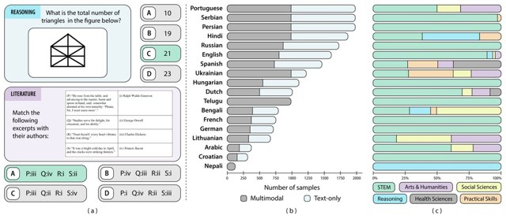
Kaleidoscope, our paper on in-language exams for massively multilingual vision evaluation, was published at ICLR 2026. Read more →

As part of the Bessel Research Award from the Alexander von Humboldt Foundation, I was a Humboldt Visiting Research Fellow at the Technical University of Munich (Chair of AI in Healthcare and Medicine), working on biases of vision-language models in healthcare. Read more →
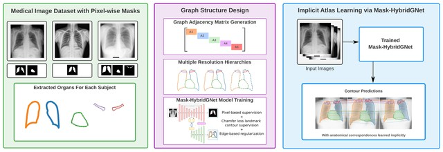
New preprint: Mask-HybridGNet, graph-based segmentation with emergent anatomical correspondence from pixel-level supervision. Read more →
Our project entitled “Reconstructing regulatory pathways: agentic knowledge graph reasoning for putative crop lncRNAs under climate stress” was selected for Anthropic’s AI for Science Program, with 20,000 USD in API credits for our scientific projects. Read more →
Interview on El Colectivo about our work on AI and health. Read more →
I received the Friedrich Wilhelm Bessel Research Award from the Alexander von Humboldt Foundation (Germany). Read more →
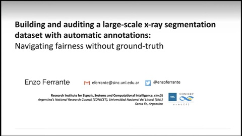
Webinar in the Datasets through the Looking Glass series about our experience creating the CheXMask dataset. Watch on YouTube →
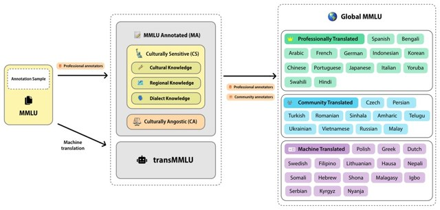
Global MMLU, on cultural and linguistic biases in multilingual evaluation, published at ACL 2025. Read more →
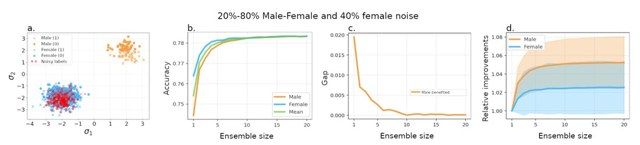
Our paper on the fairness of deep ensembles and its interplay with per-group task difficulty was presented at ACM FAccT 2025. Read more →
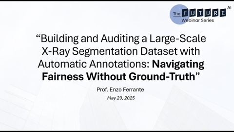
I gave the FUTURE-AI Webinar #3, organized by the FUTURE-AI network. Watch on YouTube →
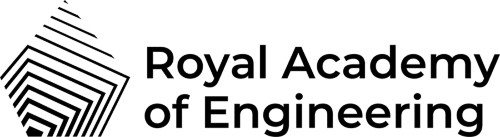
Named Distinguished International Associate of the Royal Academy of Engineering (UK). Read more →
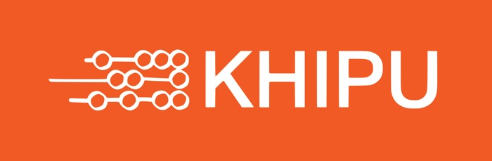
I participated as one of the co-organizers of Khipu 2025, the Latin American Meeting in Artificial Intelligence, held in Santiago, Chile. Read more →
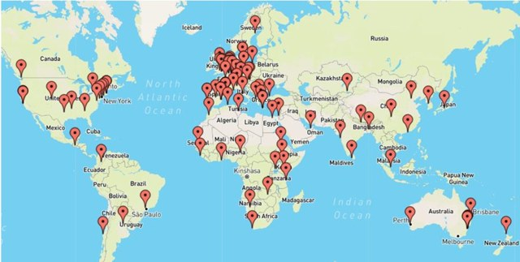
I participated in the FUTURE-AI consortium guideline for trustworthy and deployable AI in healthcare, published in The BMJ. Read more →
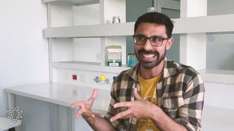
Interview with Claudio Martínez in the first episode of LAB (Laboratorio de Ideas) (in Spanish). Watch on YouTube →
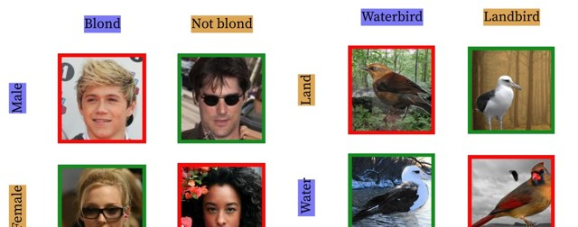
ViG-Bias, visually grounded bias discovery and mitigation, presented at ECCV 2024. Read more →
Talk at Dátame!, the LCD talks at Universidad de Buenos Aires: “De AlexNet a ChatGPT” (in Spanish). Event page →
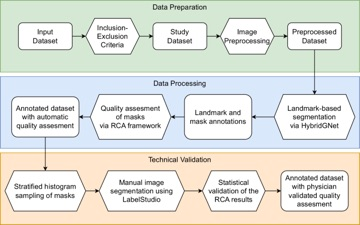
CheXmask, a large-scale dataset of anatomical segmentation masks for chest X-ray images, published in Scientific Data. Read more →
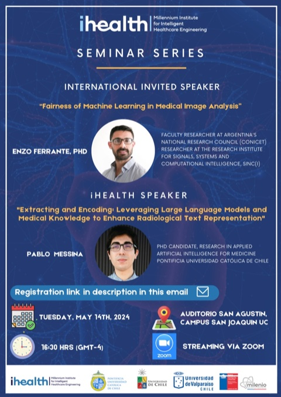
Invited seminar at iHEALTH, Pontificia Universidad Católica de Chile, on fairness in machine learning for medical image analysis (in Spanish). Event page →
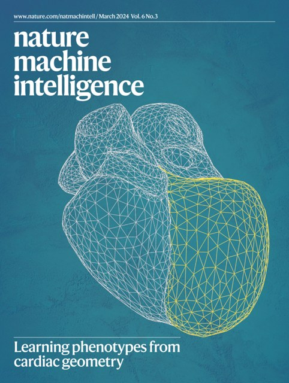
Our work on unsupervised phenotyping of heart morphology and genes, led by Rodrigo Bonazzola and Alejandro Frangi, was published in Nature Machine Intelligence. Read more →
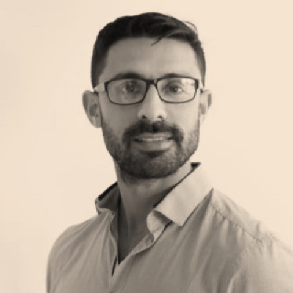
Guest in the AI-ready Healthcare podcast, talking about fairness in medical AI. Listen on Spotify →

Our project “Leveraging VLMs to Detect and Explain Hidden Biases in Image-Based Systems” was funded by the Googler Initiated Grants Program of Google (2024–2025).

Invited professor at Université Paris-Saclay (CentraleSupélec) for 2023–2024, funded by the DATAIA Institute. Read more →
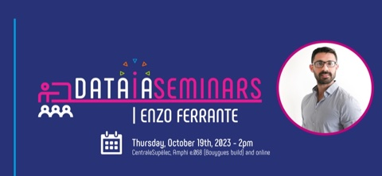
DATAIA Seminar at Université Paris-Saclay: improving anatomical plausibility and auditing fairness in deep segmentation networks. Watch on YouTube →
Our project funded by the Google AIR program on biases in AI for medical imaging was featured by La Nación. Read more →
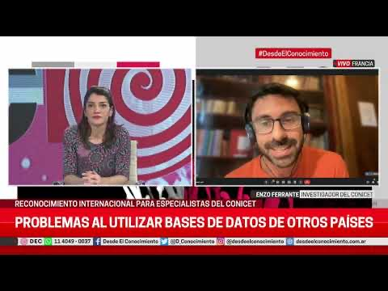
Interview on Desde el Conocimiento about AI to predict health diagnoses (in Spanish). Watch on YouTube →
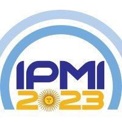
I was Local Co-Chair of IPMI 2023, the Information Processing in Medical Imaging conference held in Bariloche, Argentina. Read more →
Lectures on advanced deep learning for medical imaging at the IEEE EMBS Summer School on Biomedical Imaging, Cartagena. Event page →

Seminar at the Pioneer Centre for AI, Copenhagen: fairness of machine learning in medical image analysis. Event page →
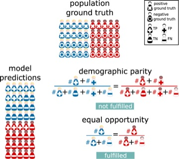
Our perspective Addressing fairness in artificial intelligence for medical imaging was published in Nature Communications (with M. A. Ricci Lara and R. Echeveste). Read more →
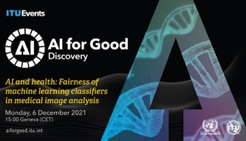
I was invited to moderate the presentation given by Lelia Marie Hampton at the AI for Good talk series about “AI enabled public health from a marginalized perspective”. Read more →
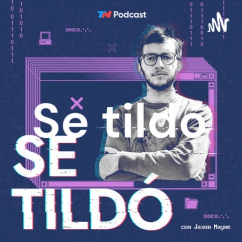
Guest in the TN Podcast Se tildó: “El algoritmo nos discrimina” (in Spanish). Listen on Spotify →
I received the Google Award for Inclusion Research for our project on bias discovery in medical imaging models. Read more →
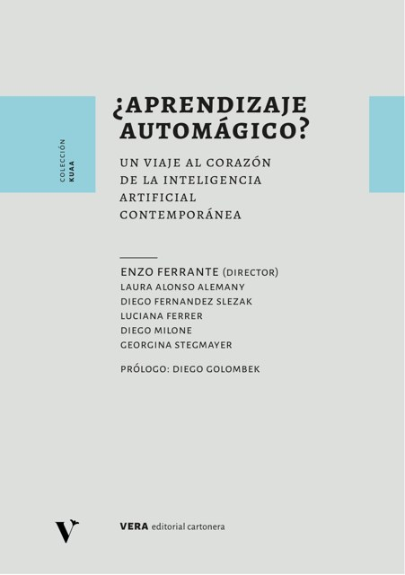
Our book ¿Aprendizaje automágico? Un viaje al corazón de la inteligencia artificial contemporánea, directed by me and written with Laura Alonso Alemany, Diego Fernandez Slezak, Luciana Ferrer, Diego Milone and Georgina Stegmayer, was published by Vera Cartonera (Universidad Nacional del Litoral) (in Spanish). Read more →
On December 6th I gave a seminar at the AI for Good series organized by the International Telecommunication Union (ITU, United Nations): “Fairness of machine learning classifiers in medical image analysis”. Read more →
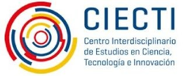
Our work at ARPH.AI on the de-binarization of gender identity in Argentina’s Electronic Health Record System was featured by the Global South AI for COVID program. Read more →
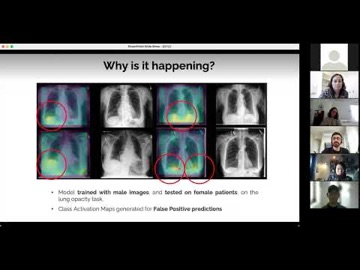
Invited seminar at the Responsible AI Seminar organized by the Technical University of Denmark (DTU): “Gender bias in X-ray classifiers for computer-assisted diagnosis”. Read more →
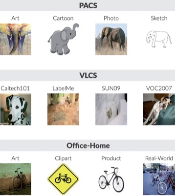
Our paper Domain Generalization via Gradient Surgery was accepted at ICCV 2021. Read more →
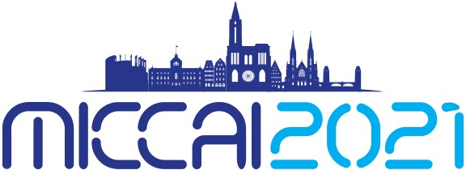
I received the Honorable Mention Reviewer Award for MICCAI 2021. Read more →
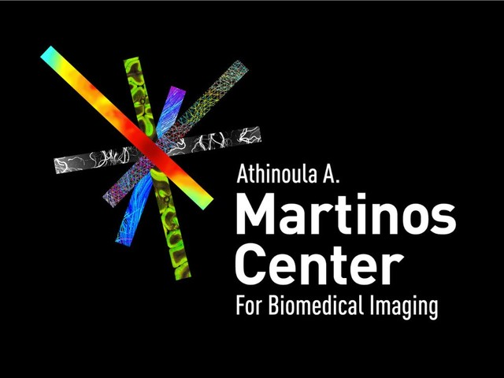
I joined the A. Martinos Center for Biomedical Imaging (Massachusetts General Hospital, Harvard Medical School) in Boston as a Fulbright Visiting Researcher, working with Juan Eugenio Iglesias, Adrian Dalca and Bruce Fischl. Read more →
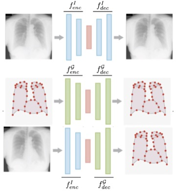
HybridGNet, hybrid graph convolutional networks for landmark-based anatomical segmentation, accepted at MICCAI 2021 (with N. Gaggion, L. Mansilla and D. Milone). Read more →
I received the Outstanding Reviewer Award for CVPR 2021. Read more →
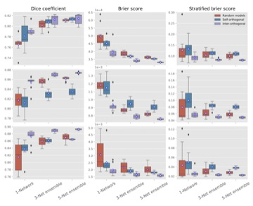
Our work Orthogonal Ensemble Networks for Biomedical Image Segmentation was early accepted at MICCAI 2021 (with A. Larrazabal, C. Martinez and J. Dolz). Read more →
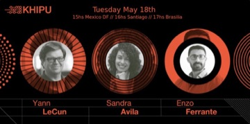
Invited keynote speaker at Khipu 2021: self-supervised learning in biomedical image analysis, together with Yann LeCun and Sandra Avila. Watch recording →
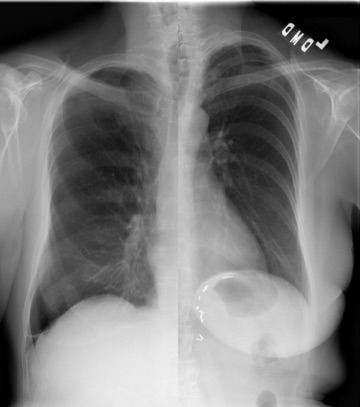
Nicolás Nieto was awarded the Junior Research Parasite Award for our work on gender imbalance in medical imaging datasets, published in PNAS. Read more →
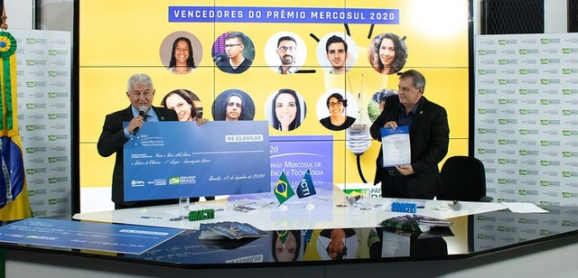
I was awarded the Mercosur Science and Technology Award in the topic of Artificial Intelligence. Read more →
Our PNAS study on gender imbalance in medical imaging datasets was featured in Scientific American, in the article “Health Care AI Systems Are Biased”. Read more →
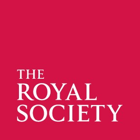
We received an International Exchanges Grant from the Royal Society (UK) to support our project on Imaging Genetics with Alex Frangi and Rodrigo Bonazzola (University of Leeds). Read more →
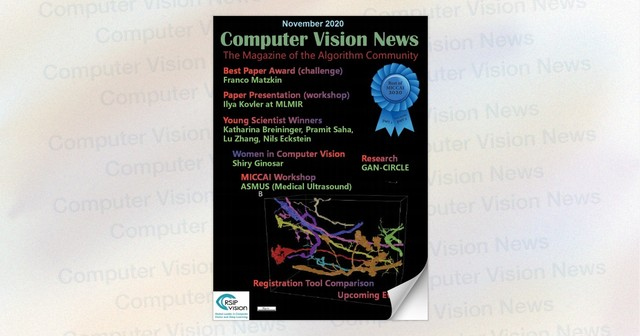
Computer Vision News featured an interview with Franco Matzkin, one of my PhD students, about our MICCAI and AutoImplant Challenge papers on skull reconstruction. Read more →
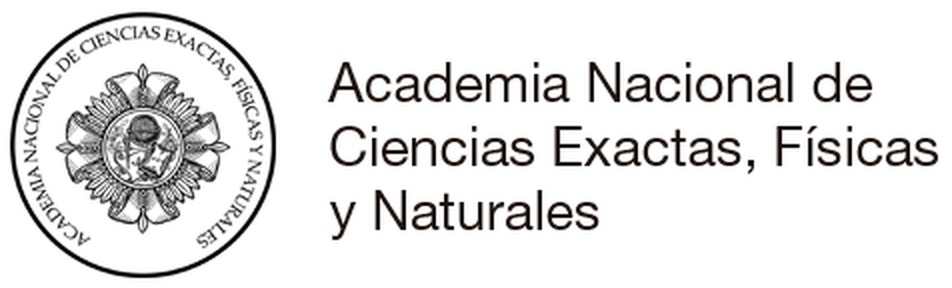
I received the Young Investigator Award from the National Academy of Exact, Physical and Natural Sciences of Argentina. Read more →
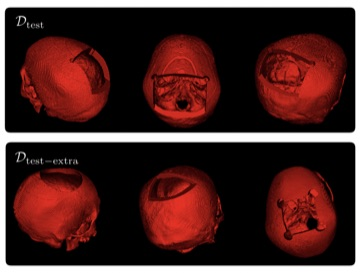
Our work Cranial Implant Design via Virtual Craniectomy with Shape Priors (with F. Matzkin, V. Newcombe and B. Glocker) received a Best Paper Award at the MICCAI AutoImplant Workshop 2020. Read more →
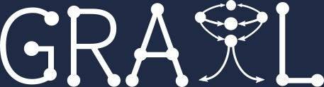
I co-organized the 3rd International Workshop on Graphs in Biomedical Image Analysis (GRAIL) at MICCAI 2020. Read more →
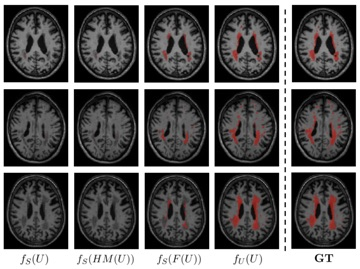
Julian Palladino presented our work on unsupervised domain adaptation via CycleGAN for white matter hyperintensity segmentation at SIPAIM 2020. Read more →
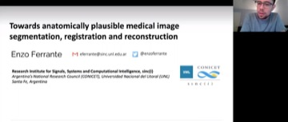
Invited talk at the seminar of the Center for Imaging Science (CIS) and the Mathematical Institute for Data Science (MINDS), Johns Hopkins University, on anatomically plausible medical image processing. Watch recording →
Invited to present our PNAS work on gender imbalance in medical imaging datasets at the Stanford AIMI Journal Club. Watch on YouTube →
Our article on gender imbalance in medical imaging datasets was published in PNAS and featured by STAT News. Read more →
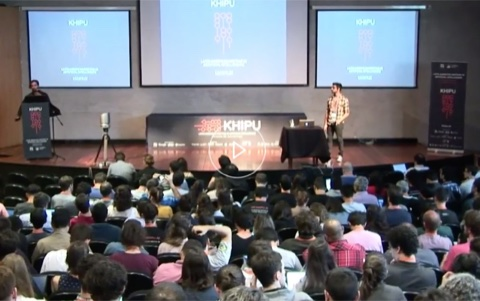
Plenary talk at Khipu 2019 in Montevideo: introduction to convolutional neural networks. Watch on YouTube →
About
I hold a CONICET Staff Research Scientist position in Buenos Aires, Argentina, leading a group on Robust Machine Learning for Healthcare and Biology at the Applied Artificial Intelligence Laboratory - LIAA (CONICET / Universidad de Buenos Aires). I'm also a professor at Universidad Torcuato Di Tella and Universidad de San Andrés. In 2012 I received my Systems Engineering Degree from UNICEN University, Tandil, Argentina. In May 2016, I defended my PhD thesis in Computer Science, at the Université Paris-Saclay (CentraleSupélec / INRIA) in France (Paris) where I worked on deformable registration of multimodal medical images under the supervision of Prof. Nikos Paragios. After that, until August 2017, I was a postdoc research associate at Imperial College London (BioMedIA lab), under the supervision of Prof. Ben Glocker working on deep learning and brain image segmentation.
Since 2022 I'm also the Head of Machine Learning of Apolo Biotech, a biotech startup specializing in RNA technologies for plants, and the Academic Leader of Anyone AI, an EdTech Startup focusing on building the largest pool of AI talent in LATAM.
I have also worked at several research institutes around the world. In 2023, I was an invited professor for half a year at Université Paris-Saclay (CentraleSupelec) in Paris, France. In 2021, I received a Fulbright Fellowship to visit the A. Martinos Center for Biomedical Imaging (Massachusetts General Hospital - Harvard Medical School) in Boston. In 2014, as PhD intern I spent 3 months working on shape understanding for the Computer Vision and Geometry Lab at Stanford University, California, USA. During 2010, I was an intern at STEEP Team (INRIA Grenoble, France) working on transport/land-use mathematical modeling. Before moving to Buenos Aires, I was a CONICET researcher at the Research Institute for Signals, Systems and Computational Intelligence, sinc(i), in Santa Fe, Argentina.
Contact
Get in touch
eferrante (at) dc (dot) uba (dot) ar
Office 2111
Edificio 0+Infinito, Ciudad Universitaria
Güiraldes 2160, Buenos Aires, Argentina
Applied Artificial Intelligence Laboratory (LIAA), CONICET / University of Buenos Aires